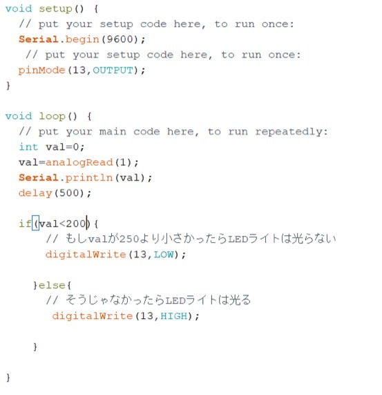

- Arduino-マイコンボード
- 正の感情・負の感情
Lチカ
≪Arduinoを使ってLEDライトを光らせる≫
１．LEDライトの＋(長い方)を１３番のピンに繋ぐ。
２．LEDライトの－(短い方)をGNDに繋ぐ。
３．Arduino IDEにプログラムを書き込み、Arduinoに送る。
４．LEDライトが光る！
〖プログラムコード〗

センサー
≪Arduinoを使ってセンサー(CdSで明るさを測定する≫
Arduinoの５Vー１０ｋΩの抵抗ーCdSセルーArduinoのGNDの流れができるように配線する
〖プログラムコード〗

- 正の感情
- 負の感情
新しい服を買った、またはその服を初めて着るとき→楽しい・嬉しい
好きなことをしているとき→幸せ・癒し